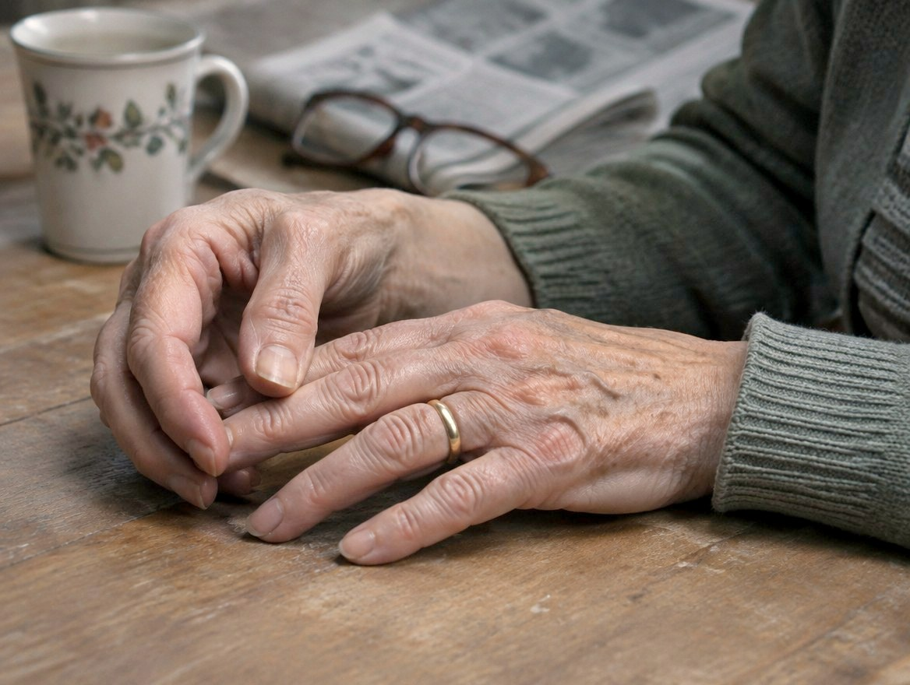
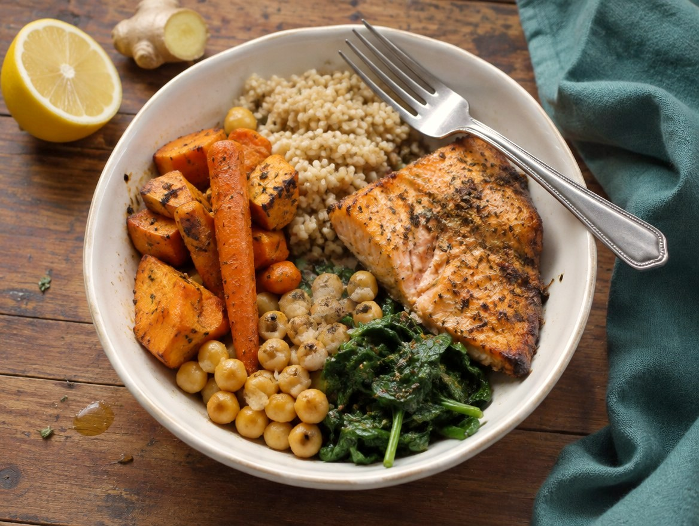
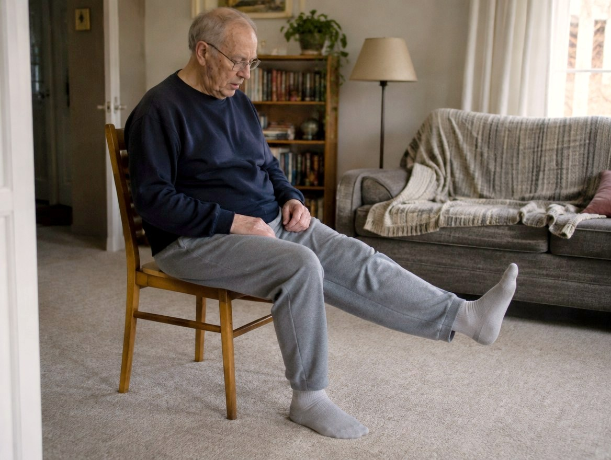
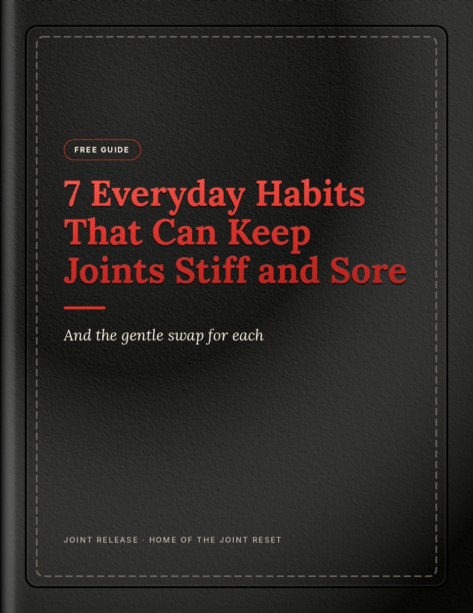

7 everyday habits that can keep joints stiff and sore.
And the gentle swap for each. A short, honest guide you can read in ten minutes, with one small step to try today.
Free · Sent straight to your email · Read on any screen or print it

It's exhausting to hurt. It's worse not knowing who to believe.
Cut this food. Drink that juice. Try this miracle. If your joints have been deciding too much of your day, you've probably heard it all. Our free guide starts somewhere simpler: seven ordinary habits that often make sore joints feel worse, and what to try instead, in plain and caring words.
Small moments that add up



Three calm steps to get started
Tell us who you are
Just your first name and email. It takes about ten seconds.
Get your free guide by email
It arrives in your inbox within a couple of minutes, ready whenever you are.
Begin with one small step
Read at your own pace and start whenever you feel ready. There's no falling behind.
What's in your free guide
Designed to be easy on tired eyes and sore hands: large type, calm pages, and boxes you can tick.
Seven habits, explained
Why each one can leave joints stiffer or sorer.
A gentle swap for each
One small change to try in its place.
One step for today
A tick-box action you can do in a few minutes.
A one-page reminder
All seven swaps on a sheet you can print.
No more guessing which remedy to trust
When you're ready for more than the free guide, The Joint Reset is our full guide. Every popular remedy in it gets one of five honest verdicts, so you know where to put your energy first and what you can stop worrying about.
Which of the 24 remedies earns which verdict? That's waiting for you inside The Joint Reset.
Get The Joint Reset · $2730-day money-back guarantee. If it isn't right for you, send us a note and we'll refund you.
The Joint Reset will be available here soon. The free guide is the best place to start today.
One small layer each week
You don't have to change everything at once. The Joint Reset walks you through a month, adding one gentle habit at a time. There is no falling behind.
Start small
A first step so easy you can do it today.
Eat a little better
Simple changes in the kitchen, no overhaul needed.
Move a little more
Gentle strength for the joints that carry you.
Make it yours
Keep what helped, and see how far you've come.
Our guides will not cure your arthritis. Nothing can promise that.
What The Joint Reset can do is real, and it matters. By its last page you will have:
- A clear picture of which remedies deserve your trust
- A daily routine you can start tomorrow
- A plan for flare days, so hard days feel less frightening
- Better questions to bring to your doctor
Built on evidence, written with care
Checked against real guidance
The main remedies are checked against published guidance from the American College of Rheumatology, the Arthritis Foundation and the US National Center for Complementary and Integrative Health.
Honest about the limits
We tell you what helps, what might, and what to skip. We never promise a cure, because nobody honestly can.
Made to sit beside your doctor
Nothing here asks you to stop your treatment. The guide even gives you questions to bring to your next appointment.
The sources are listed inside each guide. We are independent and are not affiliated with, or endorsed by, the organizations named above.
Who is behind Joint Release
Joint Release is a small, independent project with one aim: to make the confusing world of arthritis remedies easier to understand, and kinder to live with.
We are not doctors, and we don't pretend to be. We take the popular natural remedies people ask about, compare them with what trusted health organisations publish, and put it all in plain, gentle words.
No company pays us to recommend a product. If you have a question, or want your details removed, send us a note.
Questions people often ask
Can I use this instead of my medication?
Please don't. Everything in the guide is meant to work with your treatment. If you'd like to take less medication, that is a conversation to have with your doctor.
How do I get the free guide?
Enter your name and email, and we send the free guide straight to your inbox as a PDF. It usually arrives within a couple of minutes.
Is it really free?
Yes. The 7 Everyday Habits guide is free to keep. The Joint Reset is our full guide, a separate paid PDF. Buying it is entirely up to you, and there's no obligation.
Which kinds of arthritis do the guides cover?
The habits in the free guide apply to stiff, sore joints in general. The Joint Reset explains osteoarthritis, rheumatoid arthritis and gout, and is clear about where they need different care.
What format is it, and can I print it?
It's a PDF that opens on a phone, tablet or computer. The checklists are made to be printed and filled in with a pen.
I've tried everything and I'm tired. Is it worth it?
Your tiredness makes sense. You don't need to try everything again. The guide starts with one small step you can do in a minute, and that is enough for today.

Go gently. Take what helps.
Start with one small win today. You're not doing this alone.